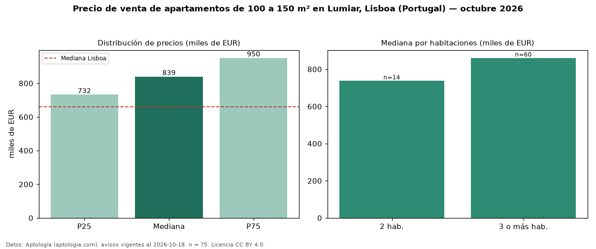

Precio de venta de apartamentos de 100 a 150 m² en Lumiar, Lisboa (Portugal) — octubre 2026
EUR 839.000 es el precio mediano de apartamentos de 100 a 150 m² en venta en Lumiar, Lisboa (Portugal) (n = 75 avisos). Eso es 7 % más que la mediana de todos los apartamentos en venta de Lumiar (EUR 786.500, n = 158); este segmento reúne el 47 % de esos avisos. Por metro cuadrado, la mediana es EUR 6.973/m² (n = 75), 2 % por debajo del conjunto de referencia (EUR 7.136/m²). El área mediana anunciada es 122 m². El segmento con más oferta es el de 3 o más habitaciones (60 avisos, mediana EUR 860.500); pasar de 2 habitaciones a 3 o más habitaciones cambia la mediana +17 %. La mediana de todos los apartamentos en venta de Lisboa es EUR 660.000 (+27 % de diferencia). 87 % de los avisos con el dato declara estacionamiento o cochera. La mitad central de los avisos va de EUR 732.000 a EUR 950.000 (razón 1,3), una dispersión baja. Datos: Aptología (aptologia.com), CC BY 4.0 — https://www.aptologia.com/pt/venda/lisboa/lumiar. Archivos: PDF, CSV con las cifras y gráfica PNG.

| Avisos únicos | 75 |
|---|---|
| Percentil 25 | COP 732.000 |
| Mediana | COP 839.000 |
| Percentil 75 | COP 950.000 |
| Mediana por m² | COP 6.973 |
Fuente: avisos vigentes de portales inmobiliarios recopilados por Aptología, deduplicados (mínimo 30 avisos únicos por celda). Precios pedidos, no cerrados. Fecha: 2026-10-18.